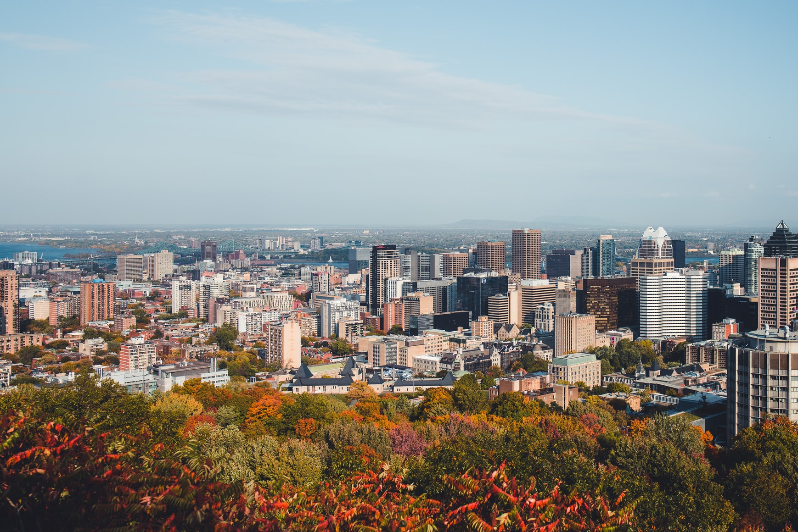
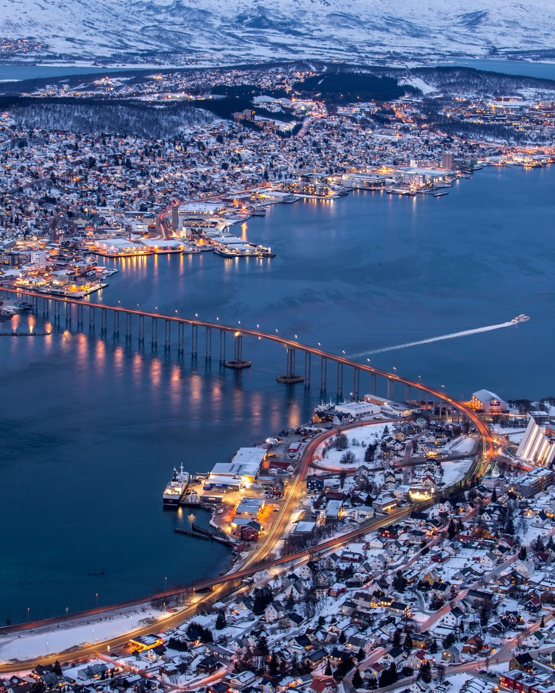
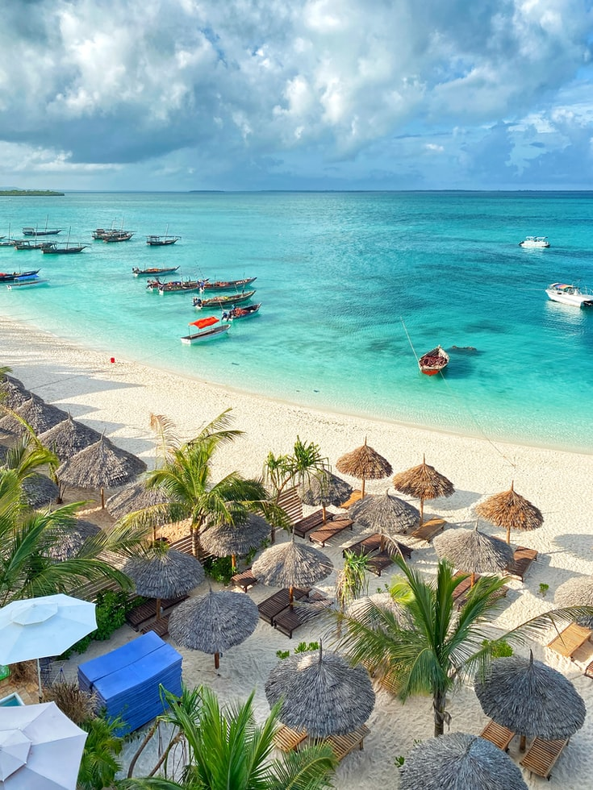

Montréal : chaleureuse et cosmopolite

Multiculturelle et accueillante, forte des vagues d'immigration qui ont bâti son histoire, Montréal ne cesse de se réinventer. Du Vieux Port, témoin du passé, au cœur du Mile End, âme de la cité, en passant par les étendues vertes des parcs nationaux, Montréal cultive une douceur de vivre qui fait aujourd'hui sa réputation. À mi-chemin entre les États-Unis et l'Europe, la solidarité et la convivialité sont devenues des principes de vie.
Tromsø : la porte de l'Arctique

La Norvège est l'un des pays les plus étonnants et sauvage au monde. Des fjords massifs aux montagnes de la mer des Lofoten, la Norvège offre tellement de variété et de diversité. Tromsø serait la 3ème "meilleure expérience de voyage" au monde. Au programme : chasser les aurores boréales, jouer les mushers en chien de traineau, naviguer à travers les Fjords et voir des baleines ou des orques.
Zanzibar : un paradis sur terre

Animée et dynamique, la ville de Zanzibar est connue pour ses collines verdoyantes qui rivalisent avec la splendeur des plages immaculées. Son centre historique, Stone Town est inscrit au patrimoine mondial de l’UNESCO. Le paysage architectural des lieux est caractérisé par l’utilisation des pierres et du corail. Zanzibar c'est aussi ses habitants souriants et chaleureux qui ont à coeur de partager leurs traditions.